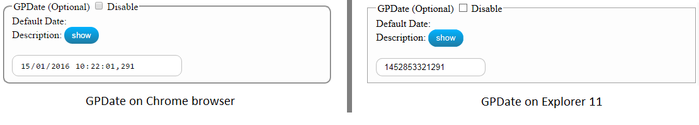

The GIG application was developed and tested with Google Chrome browser.
This browser supports all the used html tags, the stylesheet properties and shows correctly the log messages.
The other browsers, like Internet Explorer and Mozilla Firefox, were managed and tested and by them
is guaranteed the correctly task execution, but is not ensured the full experience like the Google browser.
For example, IE and Firefox browsers don't support the "date-time" input tag, and for the task's GPDate parameter
you can't use the calendar widget, but you must define it by the value that represents the number of
milliseconds since epoch (January 1, 1970) in UTC.

This example shows the difference to define the same GPDate value on different browsers.